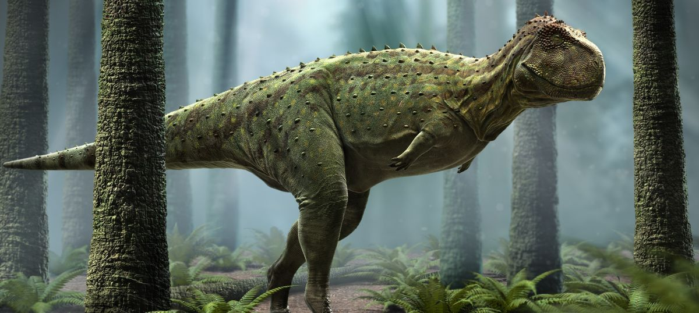

Rajasaurus is a dinosaur which lived approximately 65-70 million years ago during the
late Cretaceous Period. It was first discovered in India in the early 1980s and was subsequently
named by Jeff Wilson in 2003. The name of this dinosaur means “king of lizards”, so named because of the
impressive crest on this dinosaur’s head.
Rajasaurus was about 30 feet long, about 10 feet tall and weighed approximately a ton.
This large therapod was carnivorous and hunted sauropods that were small enough for it to eat.
Which means that it probably hunted some of the juvenile members of various herbivore species and may
have even scavenged the remains of already dead dinosaurs.
An interesting fact about Rajasaurus is that it is a therapod with head ornamentation.
This is fascinating because therapods in North America lost their head crests as they
evolved into more advanced dinosaurs. However, it appears that these dinosaurs in India developed
head crests as they evolved.